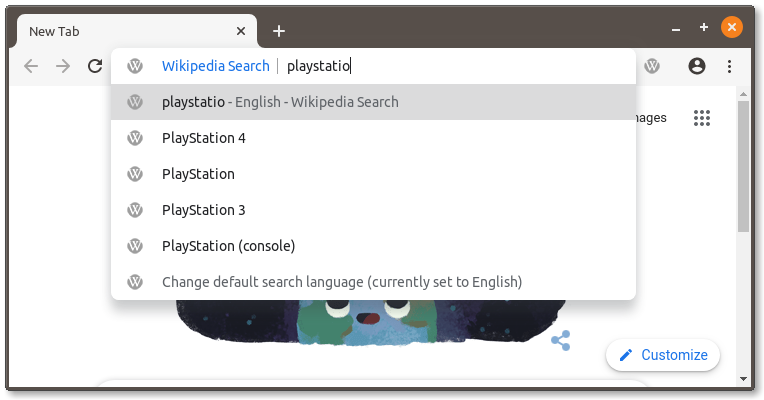
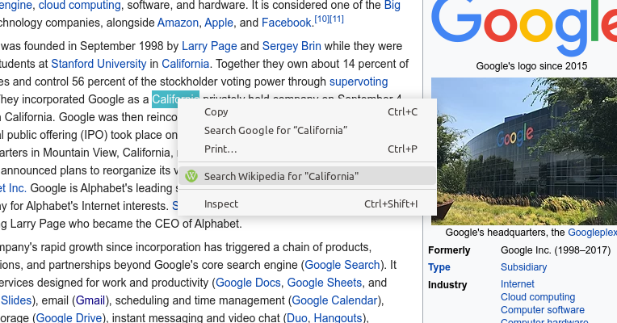
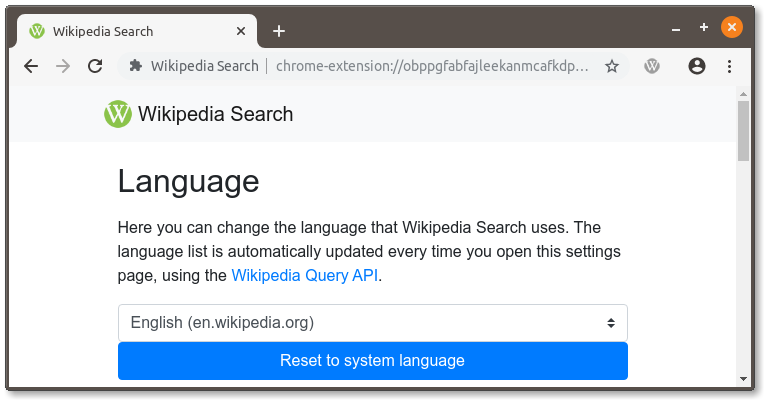
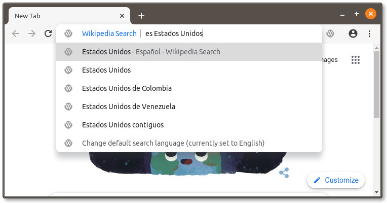

You have been updated to the latest version of the Wikipedia Search extension. This version includes multi-language searching, Firefox compatibility, and much more!
To perform a search, just type 'wiki' in your browser's address bar, then a space, then the name of the article you want. Live suggestions from Wikipedia are displayed as you type.
You can also highlight any word or phrase on the web, and an option to search in Wikipedia will appear in the context menu. Results open in a new tab, so your current page is not lost.


Type in "wiki settings" into the address bar and press the Enter key to open the extension settings. You can change the default search language to any of the 300+ languages supported by Wikipedia.
You can override the default language by typing a Wikipedia language prefix before your search. For example, to search for Google in the French Wikipedia, you would type "fr Google".


If you find a bug, or have a suggestion for a new feature, please create an issue on the NoPlugin GitHub repository or submit an issue via email.
If you find Wikipedia Search useful, please donate to support continued development. It would mean a lot!
Note: Wikipedia Search is not affliated with Wikipedia or the Wikimedia Foundation. If you wish to donate to the Wikimedia Foundation, you can do so here.